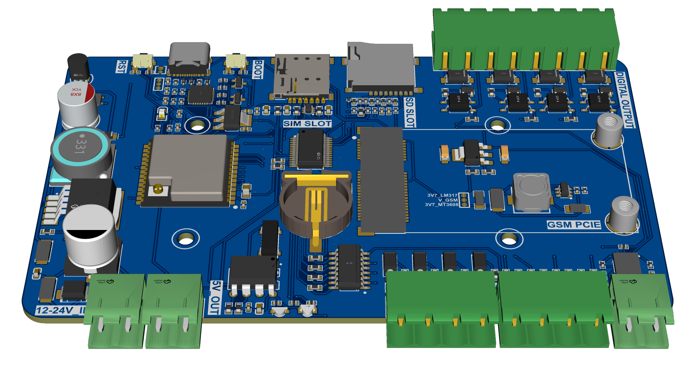
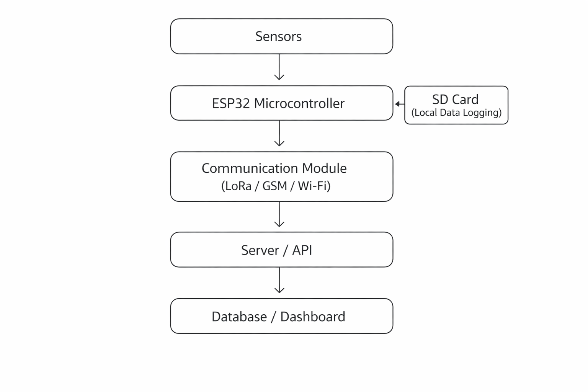
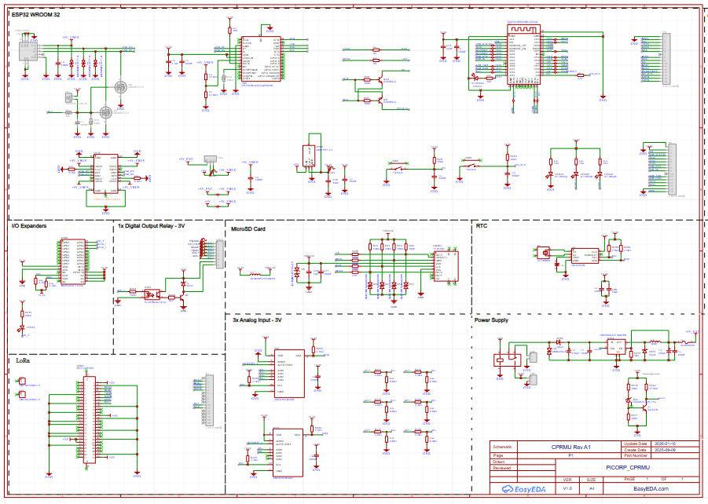
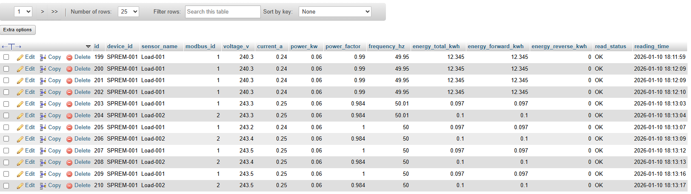
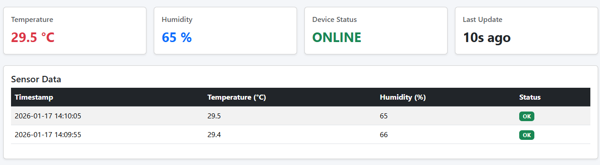

Project Overview
This project targets field data acquisition scenarios, where sensor data must be reliably collected, stored locally, and transmitted wirelessly for monitoring and analysis.
It emphasizes modularity, allowing different sensors and communication methods to be integrated depending on deployment requirements.
Key Objectives
- Design a flexible embedded platform based on ESP32.
- Support both local data logging and remote data transmission.
- Demonstrate structured firmware design for real-world IoT use.
- Understand hardware, power, and communication trade-offs.
Hardware & Prototype


System Architecture
The ESP32 Modular Datalogger is designed using a layered architecture, separating sensing, processing, storage, communication, and backend components. This structure improves modularity, simplifies debugging, and allows individual components to be replaced or extended with minimal changes.
Architecture Diagram

Hardware Design
The hardware design focuses on flexibility, reliability, and ease of integration for different sensing and communication requirements. The system is designed as a core controller with modular peripherals, allowing sensors and communication modules to be added or changed with minimal redesign.
Core Controller
The MCU is ESP32, selected for its integrated Wi-Fi, multiple peripheral interfaces, strong community support, and sufficient processing capability for sensor polling, data logging, and communication handling.
- Multiple UART, I2C, and SPI interfaces.
- Adequate flash and RAM for IoT applications.
- Low-power modes suitable for battery-operated systems.
Sensor & I/O Interfaces
- Analog inputs: ADC measurement for voltage, current, or analog transducers.
- Digital inputs: Status or event detection such as dry contacts, switches, or alarm signals.
- Digital outputs: Simple control actions such as relay activation or external device triggering.
- I2C interface: Shared bus for environmental, pressure, or industrial monitoring sensors.
- RS-485 Modbus RTU: UART-based communication with industrial sensors and devices.
- UART interface: Reserved for serial peripherals or communication modules when RS-485 is not required.
Hardware Design Images


Communication & Backend Integration
The ESP32 Modular Datalogger supports remote data transmission to a backend system for monitoring, storage, and basic visualization. The communication design focuses on reliability, simplicity, and flexibility.
Communication Methods
- LoRa: Long-range, low-power data transmission for remote or low-bandwidth deployments.
- GSM: Cellular communication where LoRa infrastructure is unavailable.
- Wi-Fi: Development, testing, or local deployment connectivity.
Only one communication method is active per configuration to reduce complexity and power consumption.
Backend Integration
- HTTP POST: Simple REST-based data submission for custom servers or IoT platforms.
- MQTT: Publish-based data delivery for near real-time monitoring applications.
Data Storage & Visualization
- Sensor data is stored in a structured database format.
- Time-series data enables historical analysis.
- A lightweight dashboard provides basic charts, status monitoring, and inspection for debugging and validation.



Dashboard implementation is intentionally kept simple and is not production-grade.
Project Takeaway
Overall, this project reinforced the importance of building reliable foundations before optimizing for performance or scalability in IoT applications.